| 日付 | 2015年2月15日（日） |
|---|---|
| 山域 | 箱根 |
| メンバー | 家族（妻、長女・3歳、長男・1歳） |
| 山行形態 | 子連れ日帰り |
| アクセス | 車 |
| ルート (Map) | 峠の駐車場 (8:38) - (8:55) 十国峠 - (9:18) 東光寺 - (9:59) 岩戸山 (10:15) - (10:52) 笹原 (11:58) - アスレチック - (14:18) 峠の駐車場 |
箱根と伊豆の中間あたりに岩戸山という山がある。
比較的マイナーな山で、この辺りに山があるという程度の認識しかなかったが
よくよく調べてみると、子連れハイキングに最適な山だ。
近くにフィールドアスレチックのコースもあるようで、
そこと合わせて歩いてみることにする。
姫の沢公園の峠の駐車場に車を停める。標高710m。
朝早いためか、周囲に人の気配は無い。
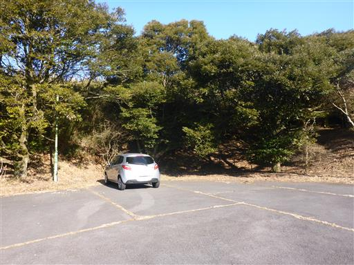
少し登ったところに日金山霊園の大きな駐車場がある。
霊園目的以外の駐車が可能かどうかは不明だ。
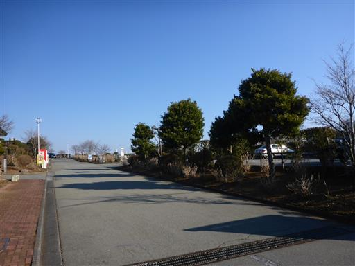
岩戸山に登る前に、まず反対方向の十国峠に立ち寄ることにする。
背の高い笹が生い茂る道を登って行く。
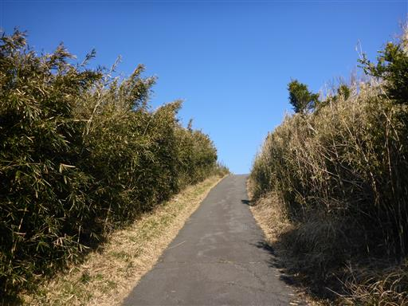
坂を登り上げると草原に出てきて、大きく視界が開ける。
目の前に富士山が現れる。今日は晴れているが、景色は霞んでいる。
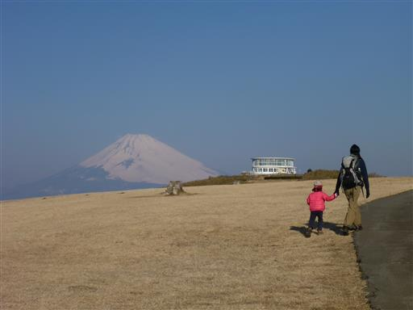
眼下には真鶴半島が見えている。
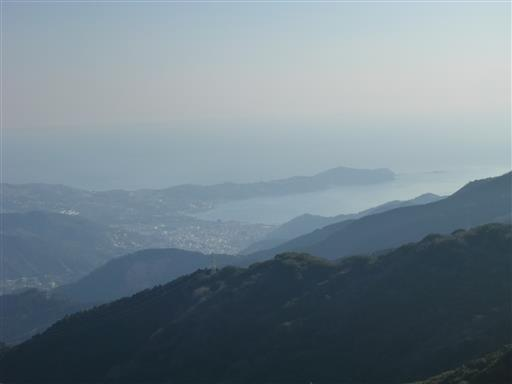
十国峠に到着。富士山の展望で有名な観光地だ。
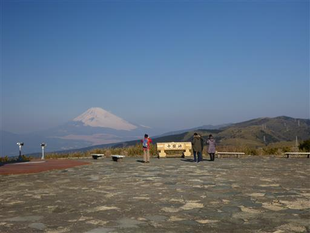
箱根方面には笹の生い茂るゆったりとした尾根が続いている。
奥のピークが箱根駒ヶ岳だ。
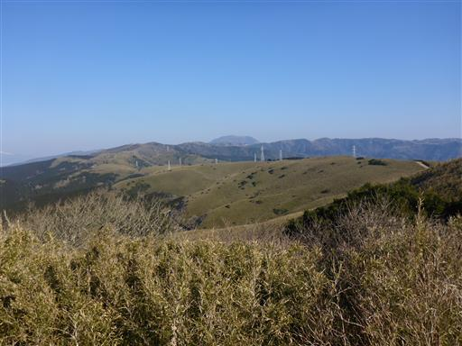
こちらは伊豆方面。幾つもの山が折り重なっている。
奥に薄ら見えるのは恐らく天城山だ。
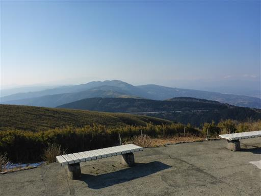
側には売店がある。ここはケーブルカーの山頂駅でちょうど営業開始時刻だ。
ここで風車を1つ買う。今日は風が強いので良く回る。
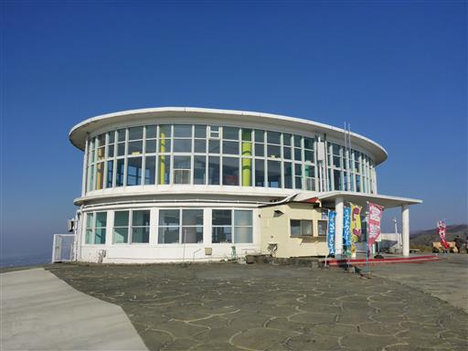
来た道を引き返して岩戸山方面に向かう。
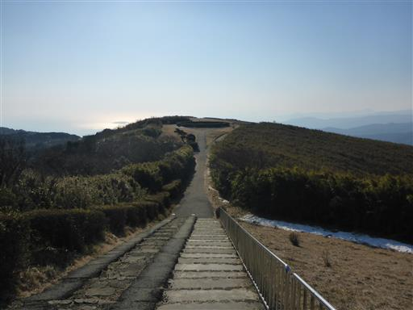
日金山霊園に立ち寄る。非常に眺めの良い墓地だ。
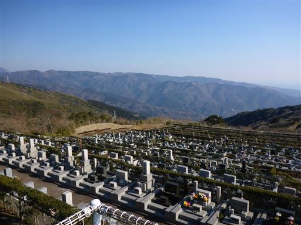
岩戸山に続く道は石仏が多い。石仏に風車が供えられている。
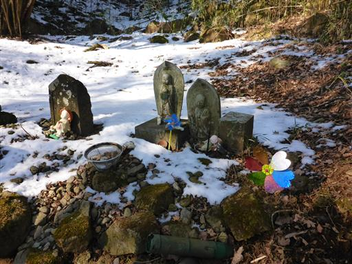
日金山東光寺に到着。ひっそりとした寺だ。
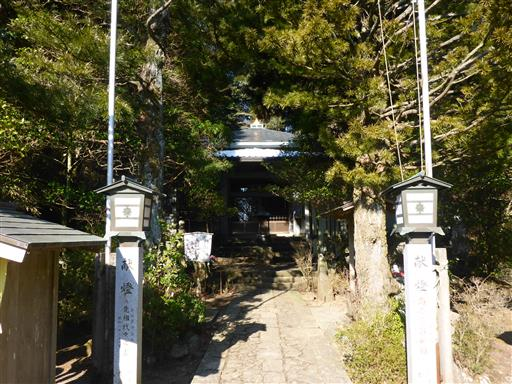
手水舎の裏に可愛い六地蔵が並んでいる。
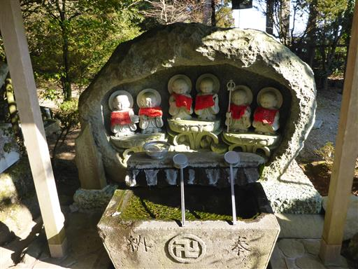
何やら怖い石像が置かれている。
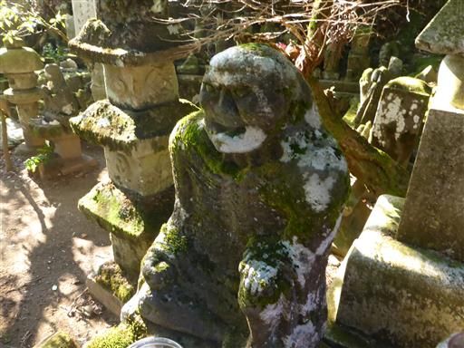
道の反対側にもう1体。
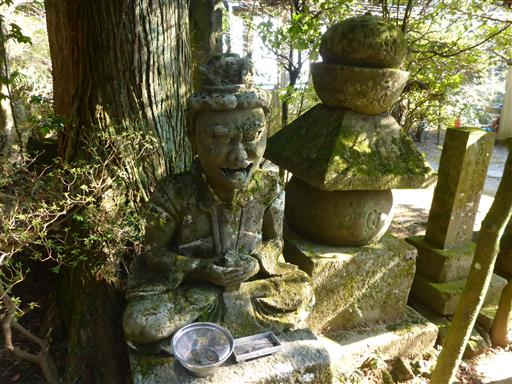
古ぼけた鐘を突く。
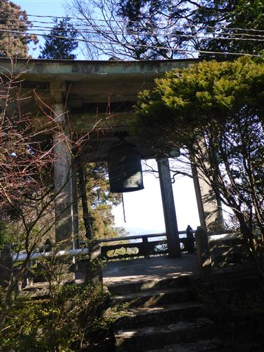
ここから登山道らしい道になる。
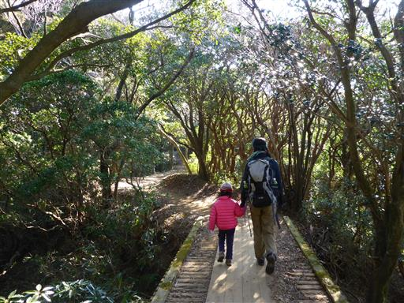
木のトンネルが続く。箱根や伊豆らしい風景だ。
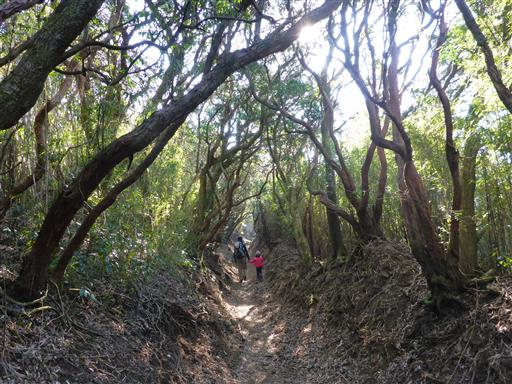
多くの石仏が並んでいる。この辺りは石仏の道と呼ばれている。
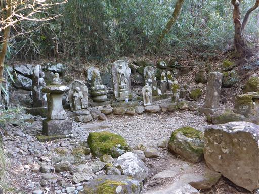
眺めの良い笹原に出て来る。昼食をとるのに良さそうな場所だ。
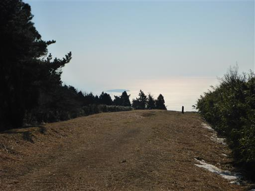
登山道に雪が出てくる。踏み固められて凍っているが、
傾斜がないため歩くのに支障はない。
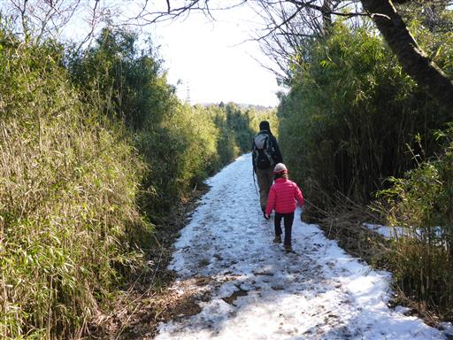
地面が凍って足跡の形がそのまま残っている。
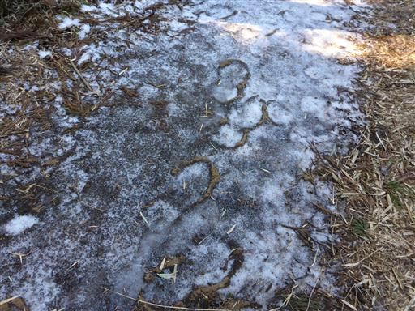
登山口から山頂までの標高差はほとんどなく、登山道の傾斜も緩い。
楽ちんなハイキングコースだ。
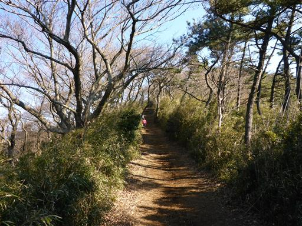
さほど展望の良くない道だが、ところどころで展望が広がる。
前の尾根の向こうに富士山の頭が見えている。
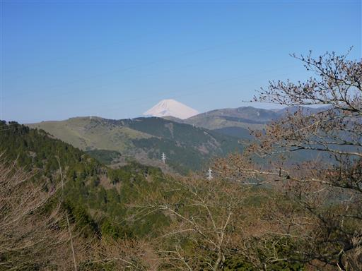
分岐点。近道とハイキングコース、どちらも山頂に通じている。
登りに近道、下りにハイキングコースを選択する。
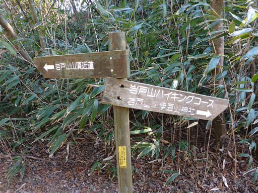
近道というだけあって傾斜は急。本日唯一の登りらしい登りだ。
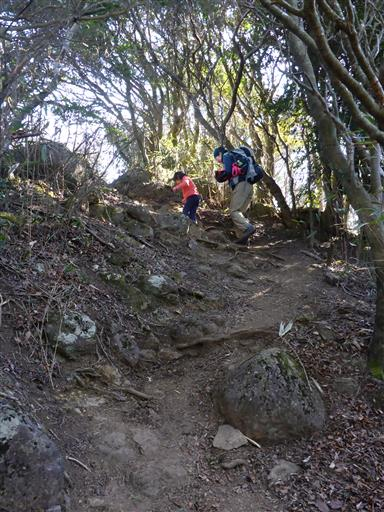
岩戸山の山頂に到着する。標高734m。
日当たりが良いためか、雪が解けて地面は泥んこだ。
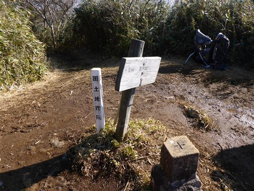
海側の展望が開ける。眼下に見えるのは伊豆の海だ。
今日は霞んでいるため、さほど海は青くない。
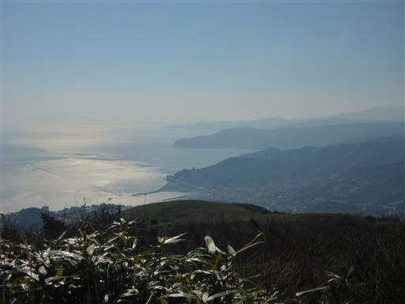
まだ昼食には早いため、おやつを食べたら下山を開始する。
帰りは予定通りハイキングコースの方に進む。
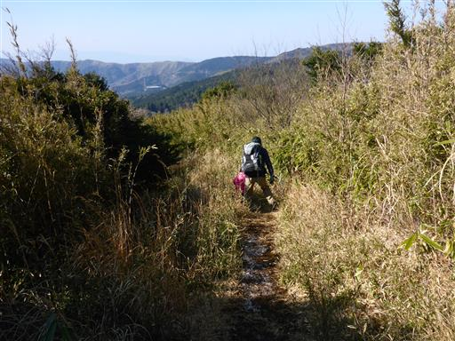
手すりが倒れて壊れている。あまり整備が行き届いていないようだ。
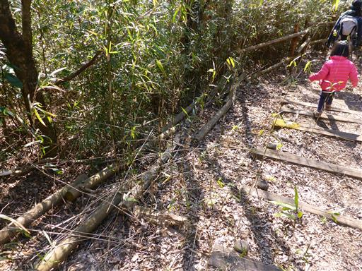
草が両側から生い茂っている。背の低い子供には歩きにくい道だ。
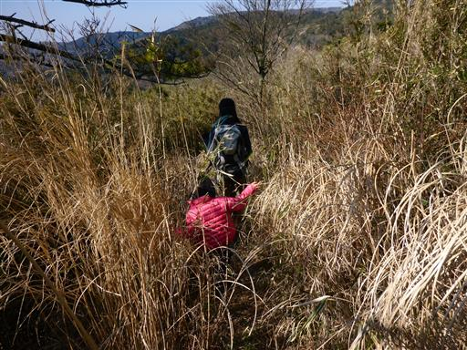
ずいぶん下ると視界が開ける場所に出て来る。
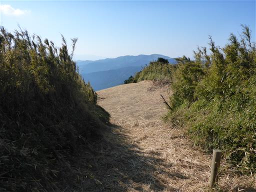
ここからは登りとなる。こちらの道は無駄にアップダウンがあり、道の整備状況も良くない。
近道の方が良い道だった。

笹原に戻ってくる。
おやつを食べたばかりだが、ここで昼食をとることにする。
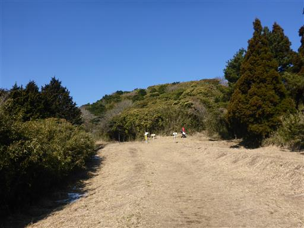
展望が良く、休憩するには最適の場所だ。
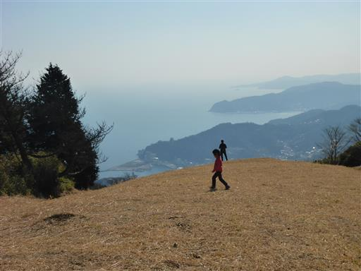
眼下には熱海の町が見える。案外小振りな町だ。

遠くに初島が見える。
こんな場所に島があるとは、つい最近まで知らなかった。
バブル期にリゾート開発された小さな離島らしい。
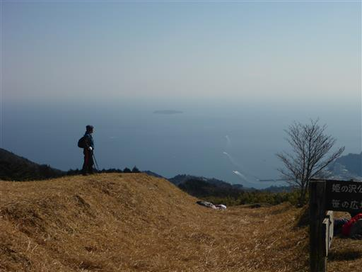
昼食をとったら笹原で遊ぶ。
子供たちは、走り回ったり、草の上に寝転んだりしている。
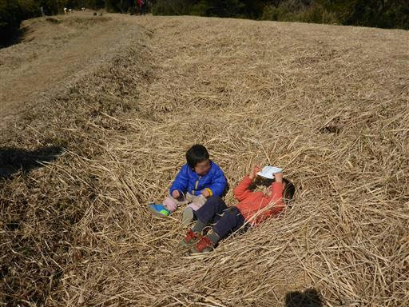
笹原から直接、姫の沢公園に繋がっているため、ここから入園する。
姫の沢公園はフィールドアスレチックが楽しめる公園だ。
入園料が無料なのが素晴らしい。ちなみに駐車場も無料だ。
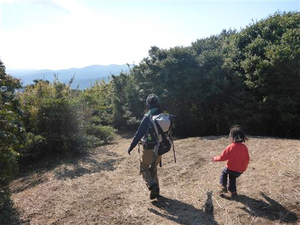
樹林帯を下って行く。なかなかアスレチックにたどり着かないため、だんだん不安になってくる。
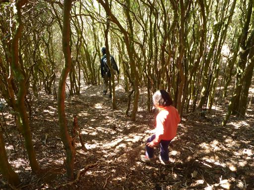
無事アスレチックに到着する。娘のテンションが一気に上がる。
こちらは「宇宙遊泳」。あっさりクリア。

アスレチックの数は50ほど。
登山道から直接入園したため、アスレチックコースのど真ん中から開始することになる。
No.20～No.1まで歩く予定だ。
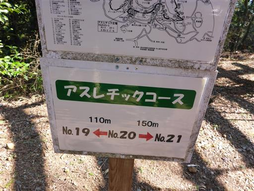
アスレチック間は100～200mほどあり、歩くだけでも結構な距離だ。
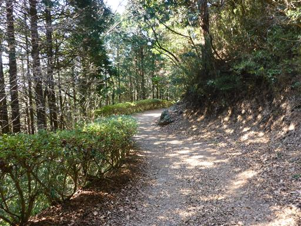
「かに渡り」。ここもクリア。
娘は3歳だが、半分くらいはクリアできる。
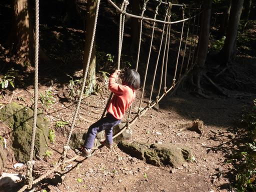
娘が木の皮を拾う。完全な輪の形になっているが、どうやって剥がれたのだろうか？
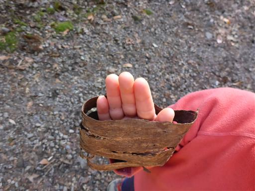
「ふりこ橋」。娘は最近高いところを怖がる。
手すり（？）を持って慎重に渡っている。
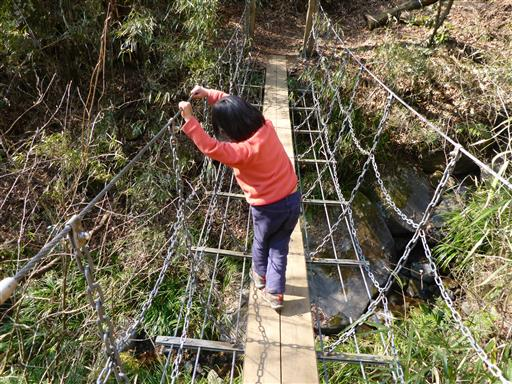
まるで山道のような細い道だ。あまり混雑していないのが助かる。
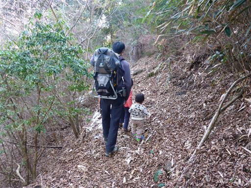
「歩けーブル」。順路と逆に歩いているため、本来登る場所を下ることになる。
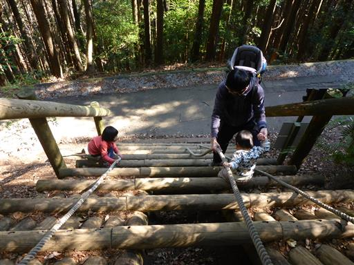
「海兵隊」。大人でもクリア不可能だった…
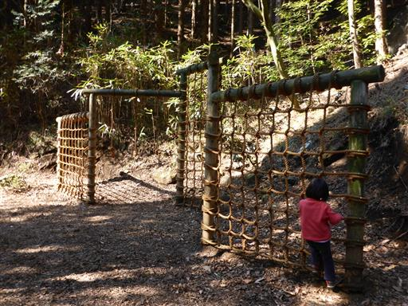
娘は頑張って挑戦しているが、最後にネットにつかまるところで苦戦している。
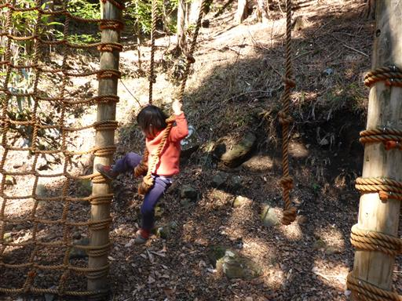
息子も楽しんでいる。ネットを勝手にどんどん登っていくため危なっかしい。
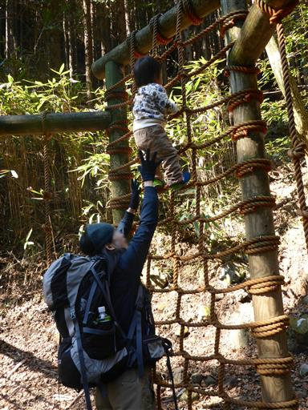
「軽便鉄道」。ただの坂道？
息子は登りの部分も含めて公園内をほとんど歩き通した。
足は遅いが、だいぶ体力がついてきた。
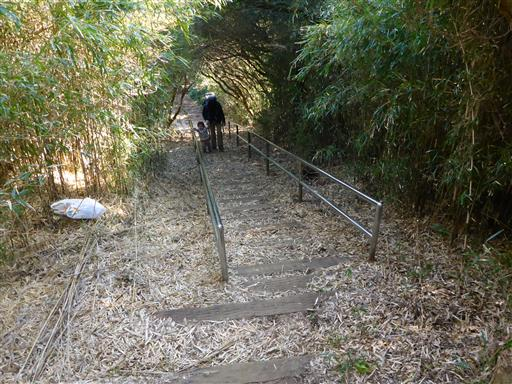
No.1の最後の遊具「未知との遭遇」。上に登ると展望が良い。
上部の柵の間が広すぎて、子供なら落ちてしまいそうだ。
最後にすべり台をして帰ることにする。
コースの半分だけだが、今回初めてのフィールドアスレチックに挑戦してみた。
山ではいつも食べ物をねだる娘が、何も言わず遊んでいたので、とても楽しかったようだ。
今後、フィールドアスレチックもお出かけ先候補の1つになりそうだ。